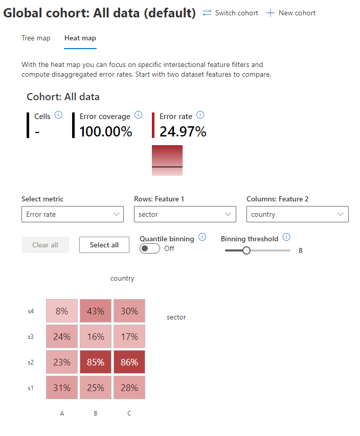
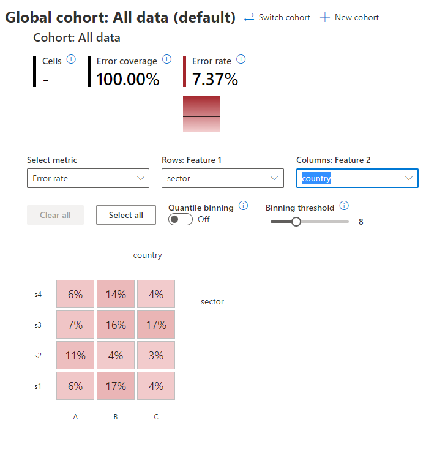

Cohort Case Study 1 - Using RAI ErrorAnalysis
We’ll repeat the experiment demonstrated in Case 1, but this time we’ll be using the Error Analysis Dashboard, available in the Responsible AI Toolbox project) to determine which cohorts of data this model performs worse on. To install this library, use the following command:
> pip install raiwidgets
In the following cells, we’ll create the toy dataset once more, but this time we won’t add any missing values into the dataset.
[16]:
import random
import numpy as np
import pandas as pd
import xgboost as xgb
from sklearn.pipeline import Pipeline
from lightgbm import LGBMClassifier
from sklearn.linear_model import LogisticRegression
from raimitigations.utils import split_data
import raimitigations.dataprocessing as dp
from raimitigations.cohort import (
CohortDefinition,
CohortManager,
fetch_cohort_results
)
SEED = 51
#SEED = None
np.random.seed(SEED)
random.seed(SEED)
def _create_country_df(samples: int, sectors: dict, country_name: str):
df = None
for key in sectors.keys():
size = int(samples * sectors[key]["prob_occur"])
invest = np.random.uniform(low=sectors[key]["min"], high=sectors[key]["max"], size=size)
min_invest = min(invest)
max_invest = max(invest)
range_invest = max_invest - min_invest
bankrupt_th = sectors[key]["prob_success"] * range_invest
inverted_behavior = sectors[key]["inverted_behavior"]
bankrupt = []
for i in range(invest.shape[0]):
inst_class = 1
if invest[i] > bankrupt_th:
inst_class = 0
if inverted_behavior:
inst_class = int(not inst_class)
bankrupt.append(inst_class)
noise_ind = np.random.choice(range(size), int(size*0.05), replace=False)
for ind in noise_ind:
bankrupt[ind] = int(not bankrupt[ind])
country_col = [country_name for _ in range(size)]
sector_col = [key for _ in range(size)]
df_sector = pd.DataFrame({
"investment":invest,
"sector":sector_col,
"country":country_col,
"bankrupt":bankrupt
})
if df is None:
df = df_sector
else:
df = pd.concat([df, df_sector], axis=0)
return df
def create_df_multiple_distributions(samples: list):
sectors_c1 = {
"s1": {"prob_occur":0.5, "prob_success":0.99, "inverted_behavior":False, "min":2e6, "max":1e7},
"s2": {"prob_occur":0.1, "prob_success":0.2, "inverted_behavior":False, "min":1e7, "max":1.5e9},
"s3": {"prob_occur":0.1, "prob_success":0.9, "inverted_behavior":True, "min":1e9, "max":1e10},
"s4": {"prob_occur":0.3, "prob_success":0.7, "inverted_behavior":False, "min":4e10, "max":9e13},
}
sectors_c2 = {
"s1": {"prob_occur":0.1, "prob_success":0.6, "inverted_behavior":True, "min":1e3, "max":5e3},
"s2": {"prob_occur":0.3, "prob_success":0.9, "inverted_behavior":False, "min":1e5, "max":1.5e6},
"s3": {"prob_occur":0.5, "prob_success":0.3, "inverted_behavior":False, "min":5e4, "max":3e5},
"s4": {"prob_occur":0.1, "prob_success":0.8, "inverted_behavior":False, "min":1e6, "max":1e7},
}
sectors_c3 = {
"s1": {"prob_occur":0.3, "prob_success":0.9, "inverted_behavior":False, "min":3e2, "max":6e2},
"s2": {"prob_occur":0.6, "prob_success":0.7, "inverted_behavior":False, "min":5e3, "max":9e3},
"s3": {"prob_occur":0.07, "prob_success":0.6, "inverted_behavior":False, "min":4e3, "max":2e4},
"s4": {"prob_occur":0.03, "prob_success":0.1, "inverted_behavior":True, "min":6e5, "max":1.3e6},
}
countries = {
"A":{"sectors":sectors_c1, "sample_rate":0.85},
"B":{"sectors":sectors_c2, "sample_rate":0.05},
"C":{"sectors":sectors_c2, "sample_rate":0.1}
}
df = None
for key in countries.keys():
n_sample = int(samples * countries[key]["sample_rate"])
df_c = _create_country_df(n_sample, countries[key]["sectors"], key)
if df is None:
df = df_c
else:
df = pd.concat([df, df_c], axis=0)
idx = pd.Index([i for i in range(df.shape[0])])
df = df.set_index(idx)
return df
[17]:
df = create_df_multiple_distributions(10000)
df
[17]:
| investment | sector | country | bankrupt | |
|---|---|---|---|---|
| 0 | 7.405851e+06 | s1 | A | 1 |
| 1 | 2.357697e+06 | s1 | A | 1 |
| 2 | 4.746429e+06 | s1 | A | 1 |
| 3 | 7.152158e+06 | s1 | A | 1 |
| 4 | 4.273704e+06 | s1 | A | 1 |
| ... | ... | ... | ... | ... |
| 9995 | 5.628480e+06 | s4 | C | 1 |
| 9996 | 4.907502e+06 | s4 | C | 1 |
| 9997 | 9.941936e+06 | s4 | C | 0 |
| 9998 | 5.940903e+06 | s4 | C | 1 |
| 9999 | 8.602032e+06 | s4 | C | 0 |
10000 rows × 4 columns
Single Pipeline for the entire dataset
We’ll now use our baseline approach, where we use a single pipeline to be trained using the entire dataset.
[18]:
label_col = "bankrupt"
df_train, df_test = split_data(df, label=label_col, test_size=0.3, full_df=True)
X_train = df_train.drop(columns=[label_col])
y_train = df_train[label_col]
X_test = df_test.drop(columns=[label_col])
y_test = df_test[label_col]
[19]:
def get_model():
#model = LGBMClassifier(random_state=SEED)
model = LogisticRegression(random_state=SEED)
return model
[20]:
pipe = Pipeline([
("imputer", dp.BasicImputer(verbose=False)),
("scaler", dp.DataMinMaxScaler(verbose=False)),
("encoder", dp.EncoderOHE(verbose=False)),
("estimator", get_model()),
])
model = pipe.fit(X_train, y_train)
With the pipeline fitted, we can create the RAI Dashboard:
[21]:
from raiwidgets import ResponsibleAIDashboard
from responsibleai import RAIInsights
from raiwidgets.cohort import Cohort, CohortFilter, CohortFilterMethods
rai_insights = RAIInsights(model, df_train, df_test, label_col, 'classification',
categorical_features=pipe['encoder'].get_encoded_columns())
# Error Analysis
rai_insights.error_analysis.add()
rai_insights.compute()
Using categorical_feature in Dataset.
Passing a set as an indexer is deprecated and will raise in a future version. Use a list instead.
Passing a set as an indexer is deprecated and will raise in a future version. Use a list instead.
Passing a set as an indexer is deprecated and will raise in a future version. Use a list instead.
Passing a set as an indexer is deprecated and will raise in a future version. Use a list instead.
Passing a set as an indexer is deprecated and will raise in a future version. Use a list instead.
Passing a set as an indexer is deprecated and will raise in a future version. Use a list instead.
Passing a set as an indexer is deprecated and will raise in a future version. Use a list instead.
Passing a set as an indexer is deprecated and will raise in a future version. Use a list instead.
Passing a set as an indexer is deprecated and will raise in a future version. Use a list instead.
Passing a set as an indexer is deprecated and will raise in a future version. Use a list instead.
Passing a set as an indexer is deprecated and will raise in a future version. Use a list instead.
Passing a set as an indexer is deprecated and will raise in a future version. Use a list instead.
Passing a set as an indexer is deprecated and will raise in a future version. Use a list instead.
Passing a set as an indexer is deprecated and will raise in a future version. Use a list instead.
Passing a set as an indexer is deprecated and will raise in a future version. Use a list instead.
Finally, we use the following command to create a dashboard, which will be available in the localhost address printed below. We encourage users to interact with this dashboard and see all of the insights this dashboard offers.
[22]:
ResponsibleAIDashboard(rai_insights)
ResponsibleAI started at http://localhost:5002
[22]:
<raiwidgets.responsibleai_dashboard.ResponsibleAIDashboard at 0x7fc60ff64f70>
For now, our goal is to analyze the error distribution for the sector and `country cohorts. In the dashboard, we’ll click on the “Heat map” option and add the sector column as the “Feature 1”, and the country column as “Feature 2”.

As we can see, the error is not evenly distributed among the cohorts. Some cohorts have high rates of errors, while other cohorts perform very well.
Different Pipelines for each cohort
We’ll now create a separate pipeline for each of the cohorts built according to the sector and country columns.
[23]:
cht_manager = CohortManager(
transform_pipe=[
dp.BasicImputer(verbose=False),
dp.DataMinMaxScaler(verbose=False),
dp.EncoderOHE(verbose=False),
get_model()
],
cohort_col=["sector", "country"]
)
cht_manager.fit(X_train, y_train)
rai_insights = RAIInsights(cht_manager, df_train, df_test, label_col, 'classification',
categorical_features=pipe['encoder'].get_encoded_columns())
# Error Analysis
rai_insights.error_analysis.add()
rai_insights.compute()
Using categorical_feature in Dataset.
Passing a set as an indexer is deprecated and will raise in a future version. Use a list instead.
Passing a set as an indexer is deprecated and will raise in a future version. Use a list instead.
Passing a set as an indexer is deprecated and will raise in a future version. Use a list instead.
Passing a set as an indexer is deprecated and will raise in a future version. Use a list instead.
Passing a set as an indexer is deprecated and will raise in a future version. Use a list instead.
Passing a set as an indexer is deprecated and will raise in a future version. Use a list instead.
Passing a set as an indexer is deprecated and will raise in a future version. Use a list instead.
Passing a set as an indexer is deprecated and will raise in a future version. Use a list instead.
Passing a set as an indexer is deprecated and will raise in a future version. Use a list instead.
Passing a set as an indexer is deprecated and will raise in a future version. Use a list instead.
Passing a set as an indexer is deprecated and will raise in a future version. Use a list instead.
[24]:
ResponsibleAIDashboard(rai_insights)
ResponsibleAI started at http://localhost:5003
[24]:
<raiwidgets.responsibleai_dashboard.ResponsibleAIDashboard at 0x7fc60fb3a9d0>
We’ll repeat the same analysis done for the baseline pipeline.

As we can see, the error is now evenly distributed among the cohorts.